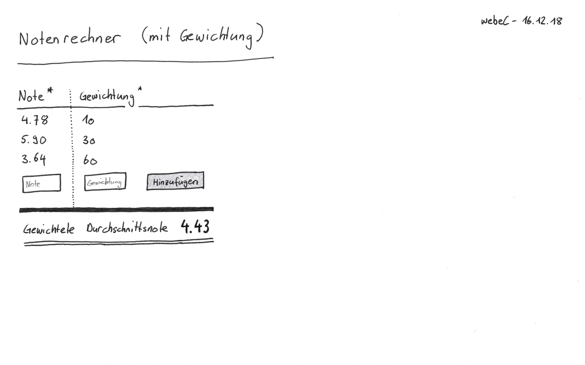

GradeManager
Der einfache und unkomplizierte Prüfungs-Manager.
Verwalte und plane sämtliche Prüfungen an einem Ort und behalte stets den Überblick über all deine Module und Noten.
Features
- Passwortgeschützte Anmeldung
- Verwalten von Lehrern, Modulen, Prüfungen
- Verwalten von Benutzern (nur Admin)
- Dashboard mit allen Modulen übersichtlich dargestellt
- Noten werden rot bzw. grün hinterlegt (un-/genügend)
- Pro Modul wird automatisch der Notendurchschnitt berechnet
- Pro Modul wird ein Lehrer und ein Ort hinterlegt
- Prüfungen können auch ohne Noten eingetragen werden
Development Mockups
Domain Model Dashboard Mockup  Grade CalculatorVersionen
- Grails: 3.3.8 | Spring Security Core: 3.2.1 | Groovy: 2.4.15
- JVM: 1.8.0_144 | jQuery: 3.3.1 | Bootstrap: 4.1.3